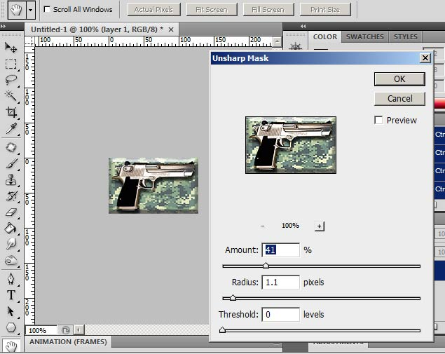

Tutorial 2: Spray with Hltagconverter With no Transparency
Our first tutorial is creating a Simple spray. Now with HLtagconverter you CAN just import any image you want and it will do all the resizing for you, however this tutorial is aimed at getting a better result by doing the resizing and enhancements in your image editor.
1)Start off with the image you want to turn into a spraylogo, then check the chart for a valid width.
2)Choose a valid width size from the chart. Resize the image with constrain proportions checked and "Bicubic Sharper". I am guessing 128 for the width. When the width is resized in the window the height reads 78. 128X78= 9984; because this is under 12288, this is a valid surface size.
3)When the image is resized do any enhancements you like such as levels, or contrast. I am going with unsharpen mask. Save the image as any lossless format. I am saving the image as a 24bit TGA file.

4)Open your image into HLtagconverter
5)Click "Adjust image". The program will automatically fix the dimensions of the height to 80 with a transparent area. Click the apply changes.
NOTE: The reason why I only made the width a valid size in photoshop and let HLtagconverter fix the height is because if a spray does not have a transparent colour set, it will screw up the spray. When HLtagconverter fixes the height it fills the space in with transparent blue. Also its not resizing the base image.
6)Save the image as a WAD file to your desired game directory
Right click to properties for your "tempdecal.wad" file and check "Read only". This makes sure the decal is not overwritten when making changes in your multiplayer menu.

The finished spray in game.
Proceed to: